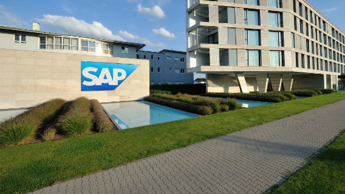

SAP

SAP has effectively established itself as the global leader in corporate application areas of software and software-related operations.
SAP is the third biggest software firm by market value, with more than 88,000 professionals in much more than 130 countries.
SAP has about 380,000 clients in far more than 170 countries.
- Type: Public (Societas Europaea)
- Industry: Enterprise software,
Business software
- Founded: Weinheim, Germany
(1972; 50 years ago)
- Founder: Dietmar Hopp
- Headquarters: Dietmar-Hopp-Allee 16, Walldorf, Baden-Württemberg, Germany
- Area served: Worldwide
- Chairman: Hasso Plattner
- Ceo: Christian Klein
- Revenue Increase: €27.842 billion (2021)
- Operating income: income Decrease €4.659 billion (2021)
- Net income: Increase €5.383 billion (2021)
- Total assets: Increase €71.173 billion (2021)
- Total equity: Increase €41.623 billion (2021)
What is SAP known for?
The company is especially known for its enterprise resource planning (ERP) software. SAP is the largest non-American software company by revenue, the world's third-largest publicly traded software company by revenue, and the largest German company by market capitalization.
What is the main purpose of SAP?
By centralizing data management, SAP software provides multiple business functions with a single view of the truth. This helps companies better manage complex business processes by giving employees of different departments easy access to real-time insights across the enterprise.
Sap Services
- SAP Application Management Services
- SAP Platform Modernization
- SAP S/4 HANA Migration and Transition Services
- Business and management consulting services
- SAP Technology Platform & Infrastructure Services